Welcome to my personal website. Get to know more about me, my hobbies, and my interests.
Explore My Website ↓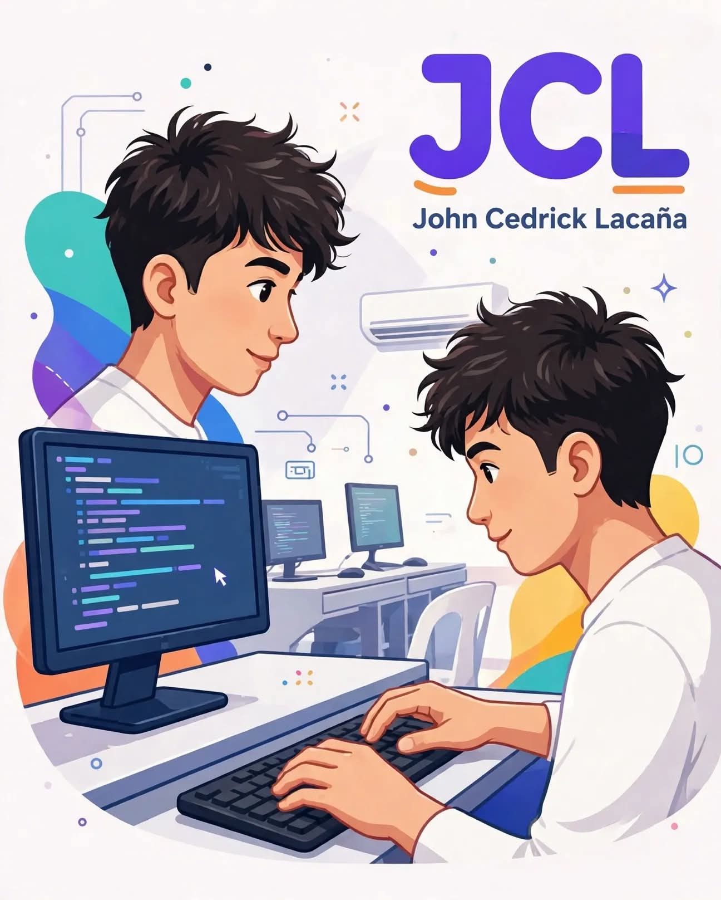
Student | Future Web Developer
Welcome to my personal website!
Hello! I'm John Cedrick Lacaña, an ICT student who is currently learning HTML, C++, and basic web development. I enjoy cycling and exploring new things about technology. Although I am still developing my skills, I am determined to improve through practice and learning. This website showcases my experiences, creative projects, and journey as a student.
My life is not perfect, but I try to be better every day. I am currently a student taking ICT, but until now I still don't know what I really want to be because I still don't know what my talent and skills are.
To be honest, when I was still in Junior High School, I really didn't know what strand I would take in Grade 11. I ended up choosing ICT even though I don't know much about computers except playing online games.
Now that I am in ICT, I try to search and study our lessons like C++ and HTML, but it's really hard for me to understand. Even though it's difficult, I still do what I can to pass our activities in coding so I won't fail.
I have experienced many failures and disappointments, but instead of giving up, I used them as a lesson to correct my mistakes. I know that life is not always easy, but I need to keep going.
My family is my motivation. They are the reason why I want to be successful. Right now, I am still in the process of finding myself and what I really want to be in life. I haven't proven anything yet, but I will do everything I can to make my family proud.
I enjoy cycling and riding my bicycle during my free time.
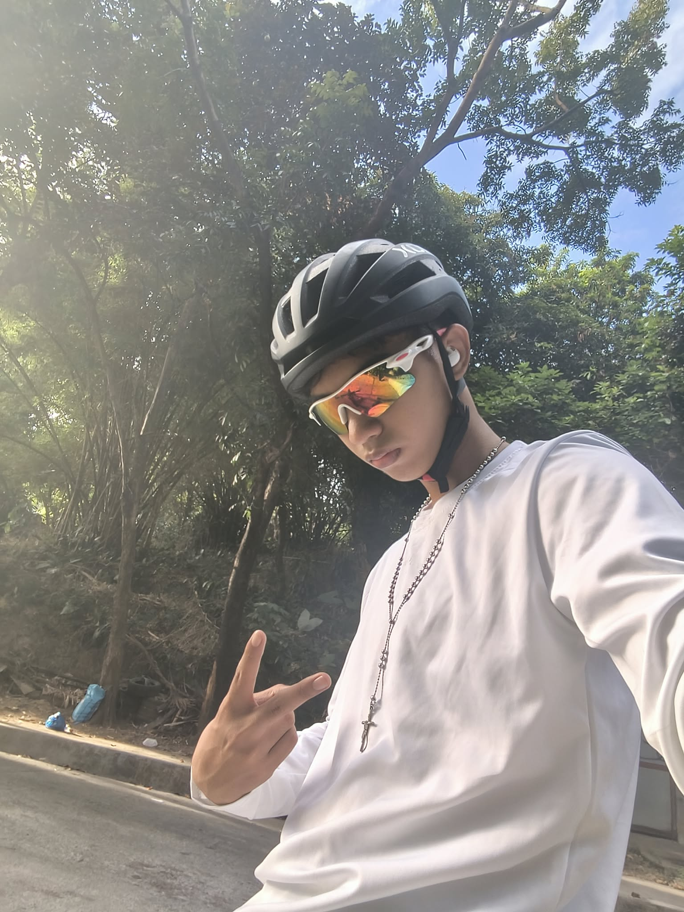
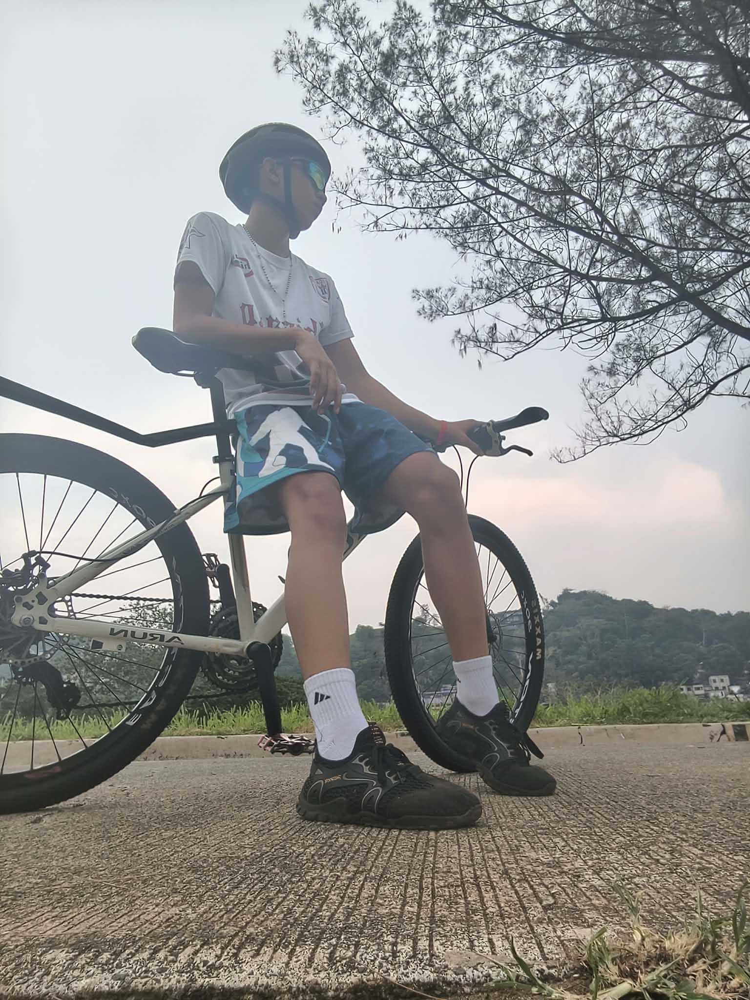
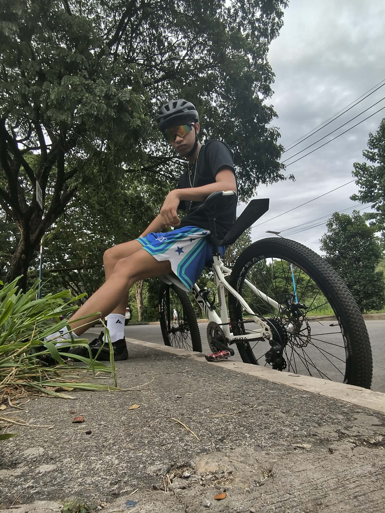
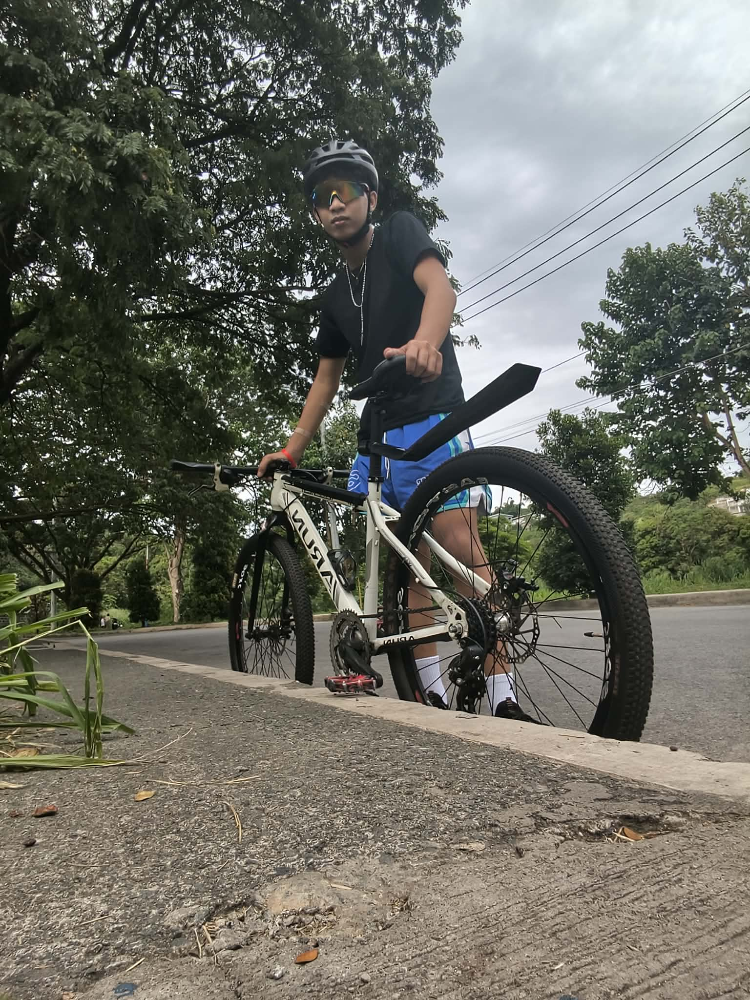
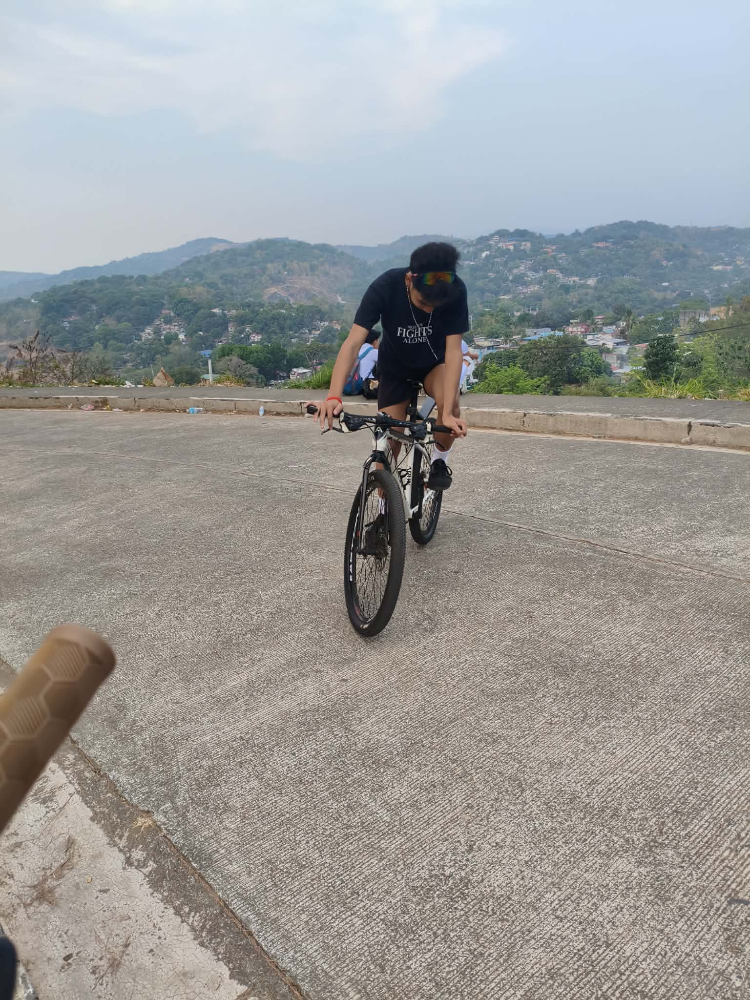
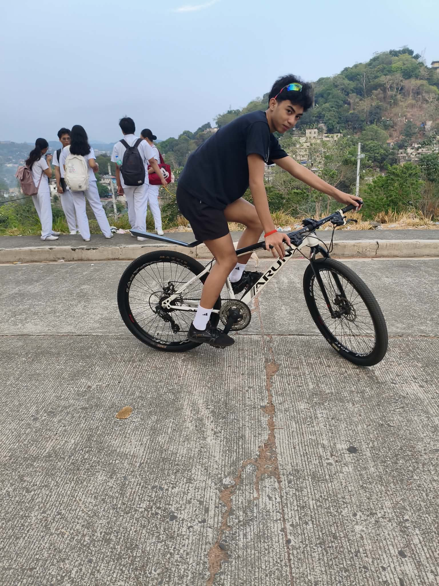
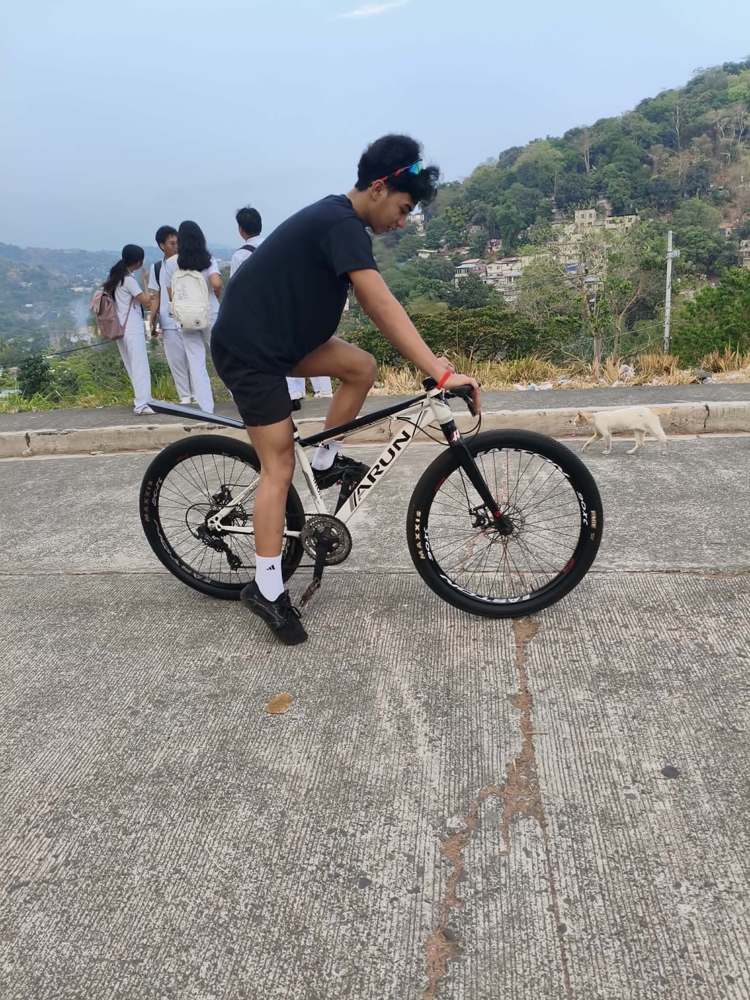
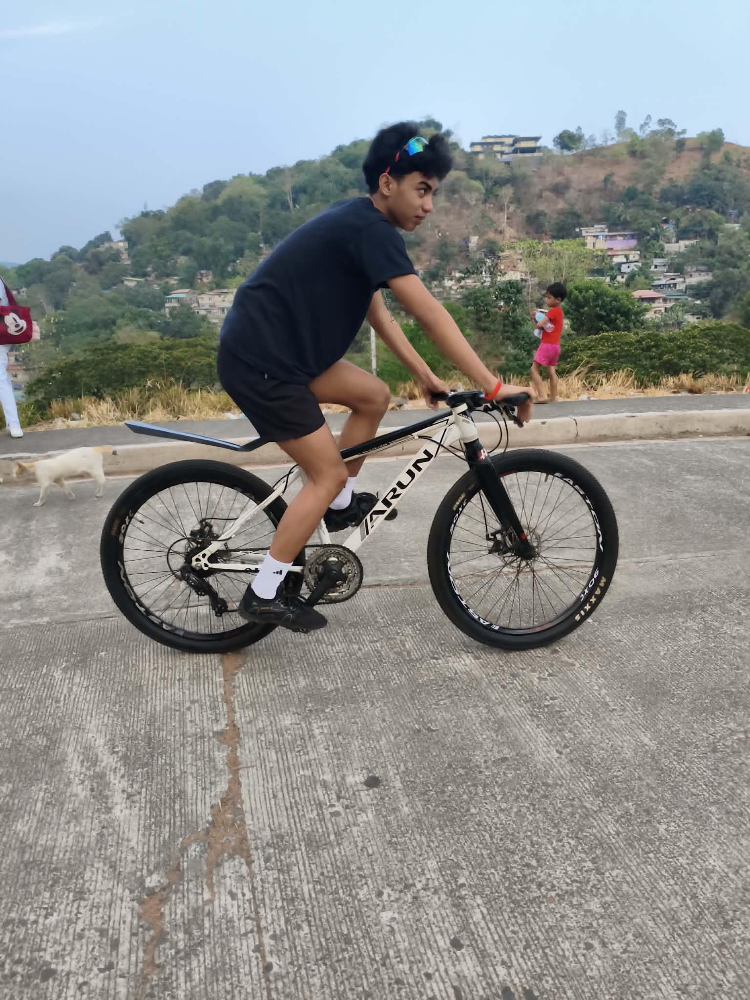
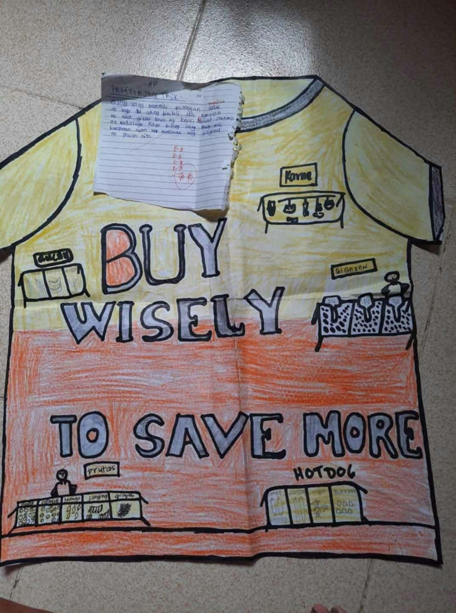
My best work is this T-shirt design titled "BUY WISELY TO SAVE MORE" which I made for our AP Performance Task when I was in Grade 9. I chose this because I put all my effort into drawing and coloring it by hand. It shows different market sections like Karne, Bigasan, and Prutas to represent wise buying in real life. This is my best work because it shows my creativity, effort, and the lesson I learned.
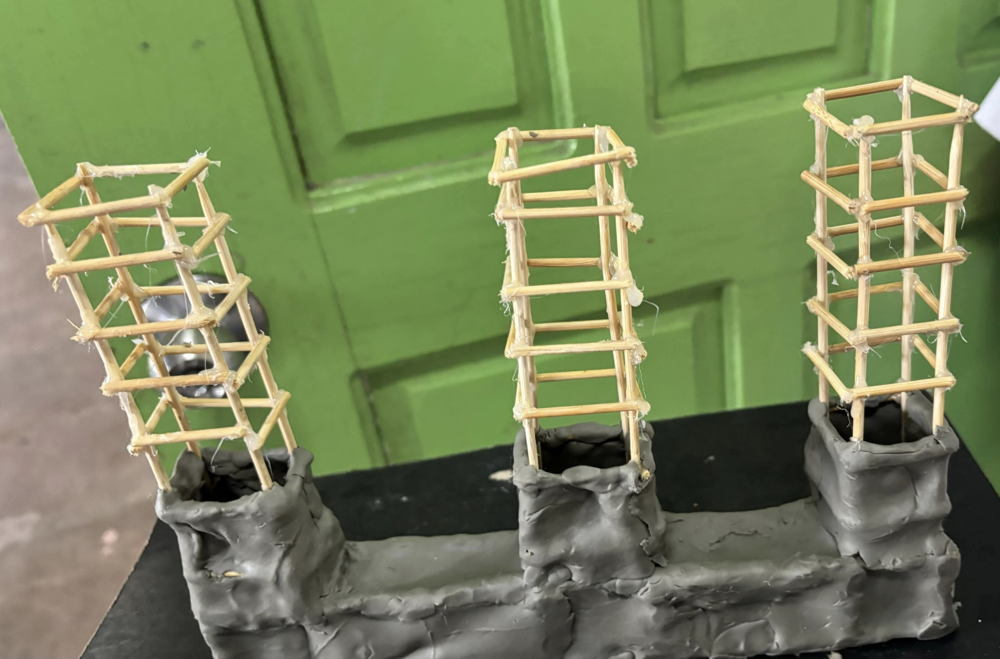
My second best work is this building concrete model that I made when I was in Grade 10 using clay and wooden sticks. I made the foundation using clay to represent concrete and used small wooden sticks for the steel framework. I chose this as one of my best works because it took a lot of patience and careful work to build. This project helped me understand the basic structure of a building and how important strong foundations are. It shows my effort and creativity in turning a simple idea into a real model.
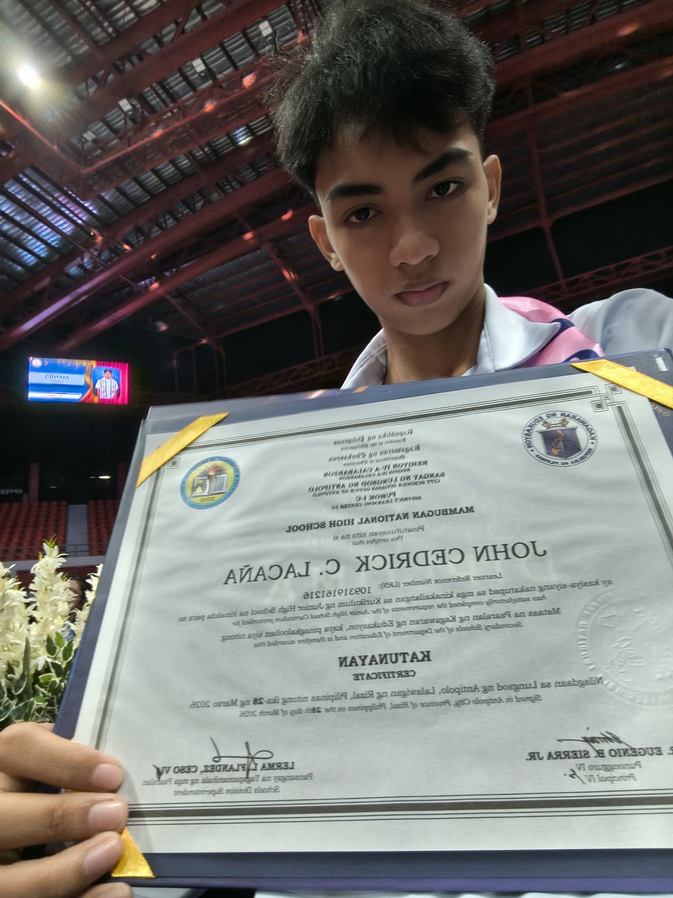
"Maingay at makulit sa klase, ngunit nakasasagot kapag tinanong sa recitation."
When I started in ICT, I honestly knew nothing about computers except playing online games. I didn't even know what strand to take back in Junior High School. I chose ICT because I was curious, not because I was good at it.
At first, learning C++ and HTML was really hard. I got confused many times and I failed in some activities. But I realized that you don't need to be good at the start. You just need to keep searching, keep practicing, and keep trying.
My philosophy is simple: it's okay to start from zero. What matters is that you don't stop. Now, I'm still learning basic coding and creating simple web pages.
This blog will be my space to share my journey as an ICT student — the lessons, the struggles, and the small wins.
You can find me on Facebook. Click the button below to visit my Facebook profile.